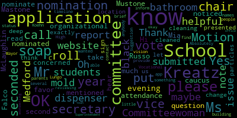

AI-generated transcript of Medford School Committee January 6, 2020 meeting
English | español | português | 中国人 | kreyol ayisyen | tiếng việt | ខ្មែរ | русский | عربي | 한국인
Back to all transcripts
[Lungo-Koehn]: We had a Committee of the Whole meeting and it went a little bit over, so I'd like to call the roll.
[Mustone]: All those present, none absent, please all rise to salute our flag. I pledge allegiance to the flag of the United States of America, and to the republic for which it stands, one nation, under God, indivisible, with liberty and justice for all.
[Lungo-Koehn]: I'd like to welcome our two student representatives that are behind the chambers with us, Isabella D'Souza and Mark Allen Jean-Marie. Thank you for being here. We have approval of the minutes of December 16, 2019. Motion to approve by Paul Rousseau, seconded by Kathy Kreatz. All in favor? Aye. All opposed? Paper passes. Approval of bills, transfer of funds, and approval of payrolls. School committee women, Kreatz? Motion to approve. Motion for approval by Paula van de Kloot, seconded by Kathy Kreatz. All those in favor? Aye. All those opposed? Paper passes. Report of the Secretary. You call the roll for bills.
[Mustone]: Member Graham. Member Kreatz. Yes. Member McLaughlin. Yes. Member Mustone. Yes. Member Ruseau. Yes. Member Van der Kloot. Mayor Lungo-Koehn.
[Lungo-Koehn]: Yes. All those in favor? None opposed? The bills are approved by roll call vote. Reports of committees. We do have a report of the organizational caucus from this evening.
[Kreatz]: This evening, the school committee had the organizational caucus, which we have each year to nominate a vice chair and a secretary for the committee. All were in attendance. There was a nomination put in for Mr. Russo to be vice chair for the year. It was nominated by Mia Mastone, seconded by Ms. Kreatz. And all were in favor. We'd like to take the roll call vote, please.
[Mustone]: Member Graham.
[Unidentified]: Yes.
[Mustone]: Paul Russo. Member Kreatz. Paul Rousseau. Member McLaughlin. Paul Rousseau. Member Mustone. Paul Rousseau. Member Ruseau. Member Van der Kloot.
[Lungo-Koehn]: Mayor Lungo-Koehn. Paul Rousseau. All those in favor.
[Kreatz]: And the second nomination was for Secretary of the School Committee. Motion by Ms. Kreatz and seconded by Ms. Mustone. Roll call vote please.
[Mustone]: Member Graham. Member Kreatz. Paulette Van der Kloot. Member McLaughlin. Member Mustone, Paulette Van der Kloot. Member Ruseau. Member Van der Kloot. Mayor Lungo-Koehn.
[Lungo-Koehn]: Paulette van de Kloot. Congratulations. Congratulations to both of you. Congratulations. Reports of committee. We had a committee of the whole meeting at 645. That went into executive session until about 7, 10 past 7. And then we opened the meeting to the public. There were two motions that were put forth by the committee. The first motion in this meeting was The purpose of the meeting was to discuss negotiation and legal matters pending litigation in the Medford Public Schools versus the MIAA. Our first motion, which was unanimous, was to request from our attorney an estimate of potential cost of attorney's fees for both sides, an assessment of probable success in the litigation, and also what kind of negotiations could occur within their amicable settlement that was approved on a roll call vote. We also made a second motion to request that student orientation and eligibility be provided rules and regulations and policies and procedure to the school committee by March 23rd 2020. Is there a motion to approve and accept the committee report?
[Kreatz]: Yes, motion to.
[Lungo-Koehn]: I'd like to re-vote for them. on the motion to request from our attorney the estimate for potential costs of attorney's fees for both sides and an assessment of probable success along with the ability to negotiate. Motion by Paul Rousseau, seconded by Melanie McLaughlin. All those in favor?
[Graham]: Yes.
[Mustone]: Oh, great. I'm not the secretary anymore. Yes. I'm not the secretary anymore. Yes.
[Lungo-Koehn]: Yes. A roll call vote, seven in the affirmative, zero in the negative. The paper passes. On the roll call vote for motion to request the student orientation and eligibility, policies and procedures be provided to the school committee by March 23, 2020. Roll call vote.
[Unidentified]: Yes.
[Van der Kloot]: Yes. McLaughlin. Yes. Member Mustone.
[Unidentified]: Yes.
[Van der Kloot]: Member Ruseau. Yes. Member Van der Kloot. Yes. Mayor Lungo-Koehn.
[Lungo-Koehn]: Yes. Motion of seven in the affirmative, zero in the negative, the paper passes. We have community participation. I believe we have Mr. Falco in the audience. Yes.
[SPEAKER_14]: Hi.
[Lungo-Koehn]: Hi, please state your name and address for the record.
[SPEAKER_14]: Joey Falco, 123 Fulton Spring Road.
[Lungo-Koehn]: Thank you.
[SPEAKER_14]: Good evening. I'm a ninth grader at Mefford High School. I would like to begin by congratulating all of you for being sworn into office yesterday. Thank you for your service to our community, and I wish you well in the upcoming term. While I have only been at Mefford High School for four months, I quickly became aware of the poor conditions of the MHS complex, especially the bathrooms, which is my focus tonight. I initiated on a petition on change.org on November 15th to draw attention to this matter. This petition has been signed by close to 450 students, educators, and parents. This prompted me to email the school committee members on December 16th of 2019. I used many of the restrooms throughout the building. I understand that there are a lot of priorities in regard to funding, but I believe the school environment is important for students' ability to learn. Some of the following issues need to be addressed for safety and health concerns. like the bugs in the soap dispensers, black molds, water damage to various ceiling tiles, exposed radiator pipes, missing ceiling tiles, and insects. I'd like to give each of you a few pictures to help illustrate the issues that the students at MHS encounter every day. While some of these issues will take significant spending to fix, I believe that some of these issues can be addressed immediately and would like to respectfully ask your help in addressing these needs. I thank you for your time and would be happy to answer any questions that you may have.
[Lungo-Koehn]: Vice Chair Rousseau.
[Ruseau]: Thank you. I just would like to sort of reiterate that community participation is, because the item is not on the agenda, we are not supposed to be discussing the item. It is on the agenda as something else later. So we can discuss it then. Good.
[Lungo-Koehn]: Can you just let me put your mic on first, one second? Just let me put your mic on, so that everybody can hear you.
[Van der Kloot]: School committee woman, Van de Kloof. I'd like to make a motion that we take up item number three under the report of superintendent, NPS bathrooms, from Mr. McLaughlin, so that we can address this right now.
[Lungo-Koehn]: Motion to suspend the rules, to take paper under report of superintendent? Yes. Seconded by Vice Chair Russo. All those in favor? Aye. All those opposed? We have a report on the Medford Public Schools bathroom by John McLaughlin.
[Van der Kloot]: Mayor Lungo-Koehn. Yes. In the meantime, while we wait, I just want to thank Joey for coming forward and for making this statement and being proactive about what he's seeing at the high school. We are only as good as our information we received, Joey, so thank you very much.
[Lungo-Koehn]: Mr. McLaughlin.
[Mr. McLaughlin]: Good evening, Madam Mayor.
[Lungo-Koehn]: Good evening.
[Mr. McLaughlin]: Council, student committee. So, I did, Peter will have something to add as well to the report. So upon social media, I took, Mr. Falco did a good job. We went out and I went out and personally inspected all the bathrooms. I went out and made sure that they're old, the bathrooms are old. You cannot take that away. But let me just run through the report real quick. So I went through the bathrooms and some of my findings was some of the fin tube radiator covers are in need of replacement. So at this time we have started the replacement of the radiator covers. We're waiting for some parts to come in from Granger to finish it. I didn't find any signs of rodent activity or insect activity. I encourage people to report it because we do have an integrated pest management plan in all of our schools. And we need to know immediately if there's anything like that happening because we can call in our contractor and take care of it right off the bat. So the restrooms are old. They're not aesthetic. There's been many years of repainting and painting. The tile's old. It's outdated. The fixtures and the sinks are all running. We went through this past vacation. I had the contract cleaners do a heavy cleaning of the bathrooms. We went in and did some sealant tile replacements, replaced locks that needed to be replaced on stall doors, made sure everything was running. Besides being old, we're trying to do what we can for them. They clean, they don't look good. So over the past few years, they used to have Bradley sinks in them. We replaced them with regular sinks and put Formica countertops on them. And the Formica's wearing out, it's 15 years old. So I mean, we do have some work to do. I think at this point, and I know Pete is gonna allude to it, that we do have some available cash to possibly do at least two of them. over, we just have to make decisions on which ones that we'd like to do and then go through the process of hiring a contractor. And I also work with Paul DeLaval, which was a big thing, is we got together and we decided that in the mornings, when they open up the cafeteria side for breakfast, When they close them, when the kids pass to the hallways, the custodians are going in, cleaning them, making sure they're all clean, and then they don't get open till lunch. On the other side, on the guidance side that's been open all morning, we are cleaning them at noontime when they lock. So we're going in there and freshening them up, trying to keep them as fresh as possible as we can. Obviously, if there's any issues during the day, the assistant principals will contact us and we'll do what we need to do to freshen them up as best we can. And I think, yeah, so over the holiday break, like I said, we did the heavy duty cleaning in there. They're better, but they're old. They just don't show anything. They've been painted over and over and over again.
[Lungo-Koehn]: Vice Chair Rousseau.
[Ruseau]: Thank you for the report. I had a question about how students and staff can quickly report things. well-known process that if you ask students and staff, they would have an answer.
[Mr. McLaughlin]: You know what, to that, I can't answer it. I would assume that they would go through the assistant principals, or a teacher, or anybody that can get in touch with Headmaster DeLave or whomever. Normally, if something goes on in a bathroom, we'll get a report, mainly by the assistant principal, that'll say, hey, we need a clean up here in bathroom two in C building, and then over the radio, and then we'll send somebody right up.
[Ruseau]: And how often are custodians actually checking each bathroom throughout the day?
[D'Alleva]: So with the schedule that Mr. McLaughlin talked about, we've been trying to kind of clean, shut down, open, clean, shut down, open. I think that's happening twice a day, which is more than what we were doing before. The frequency of the cleaning also helps us with reporting as well because being an assistant principal and being a male as well or being a headmaster, I can't get into every single bathroom or I have to wait for somebody to come and look at another bathroom as well. So again, what's been helping is that schedule of cleaning. Because sort of what we've utilized at the Andrews when I was there as well is that when you're constantly updating the bathrooms, we're getting more reports regarding graffiti, things of that nature. For the other stuff, I've always asked, too, if anybody has any concerns or complaints, to just please see me so I can address it.
[Ruseau]: Thank you.
[Kreatz]: School Committeewoman Kreatz. Hi. OK. Thank you very much for the report, Mr. McLaughlin. I just had a question, because I know Mr. Falco mentioned that he noticed some black mold. So I was just concerned. I didn't hear that, and I didn't read that in the report that was presented. Did you, when you were doing the deep cleaning, was there any sign of any black mold?
[Mr. McLaughlin]: I'm afraid I didn't get any reports to that. I mean, if there's something going on, yeah, we'll go back in there immediately for sure.
[Kreatz]: And then were the soap dispensers, were they cleaned out? Or were they, do you think maybe it was like particles in the soap dispenser? Or was it, you know, maybe just a change of soap?
[Mr. McLaughlin]: The soap dispensers are a closed item, so I don't know. I know that we've had some instances in the last month where we had to replace six of them. So I don't, you know, I don't know how it happened. I wish I did. I wish I had more information so that I could've been conclusive on what was happening. And just for the fact that, like I said, if there was insect activity, if there was rodent activity, if there was any kind of activities in there, to get in there as fast as we can. would be the most appropriate thing to do. So I think that we know now that we're going to probably get some kind of a reporting system going where the kids know exactly who to either call me, either call headmaster, assistant principal, so that we can respond in a manner that's prudent and fast.
[Kreatz]: Would it be helpful if the students let us know exactly what location the bathroom is, like C building. Absolutely.
[Mr. McLaughlin]: Any information that we can get is going to help the solution to the problem, and as fast as we can get it.
[D'Alleva]: I just want to reiterate that these are old bathrooms. These are bathrooms that we can do the facelift part of everything. But I think where the concern is that we're talking 15 years. of a change, and if anything, cars, anything like that need to be updated in that sort of way. And like I said, with the reporting process, if we know right away, we do have enough bathrooms at the high school where if we do end up shutting one down, we can notify people which one would be open as well. So.
[Kreatz]: Thank you. I just had a suggestion. Would we be able to put just a little note on the website, the Medford High School Medford Vocational website, just with the brief note that, you know, to inform students and parents if there's an issue to please contact and then provide like the names, you know, if there's an issue in the bathroom. if that's something that would be helpful.
[Mr. McLaughlin]: I think a lot of what might help us, too, is we are working on the see something, say something app, which is going to be rolling out at some point, which is definitely going to be another way to get reporting in as quick as possible. And that'll be really good, but for now, the assistant principals, even buildings and grounds, the door's always open. Come on down, we'll go right up there, take care of it. I mean, everybody's willing to help. Nobody wants what we feel or what the students feel is happening. We don't want that. We want it as good as we can get it.
[Lungo-Koehn]: Thank you. School Committee, Woman McLaughlin.
[McLaughlin]: Thank you for your report. I also wanted to ask, following up on the black mold issue, clearly we have a student that was good enough to bring us in some photographs. So there is black mold somewhere in some of the bathrooms that is a concern. So one of the questions that I would have is what is the process for removing black mold in those situations? Do you know or what do we do?
[Mr. McLaughlin]: We can hit it with the cleaners that we use are sufficient and the green cleaning that can clean it. Now, I don't know where it was. I didn't see the picture. Was it like a ceiling tile?
[McLaughlin]: And I wanted to add, the pictures are very, very helpful.
[Mr. McLaughlin]: Yeah, I don't know what that is. The ceiling tiles, we went in there and we tried to replace a bunch of them. We replaced a bunch of the stained ceiling tiles. And we're replacing a bunch of the heat registers. Yeah, that looks like it's inside of a bowl. I don't know where that could be coming from. Sink? Joey, sink?
[D'Alleva]: C3, the countertop.
[Mr. McLaughlin]: Oh, okay, all right, all right. Yeah, we might have to take it out and replace it. I didn't notice it during my tour either.
[McLaughlin]: Thank you. I know that there's going to be a discussion of some funds to at least address, you were saying, perhaps a few of the bathrooms. And I'm wondering, I'd like to make a motion that we have maybe a report of how and where those funds are used and what they're being applied to for those bathrooms, maybe within the next 30 days or so. Well, I think.
[Mr. McLaughlin]: actually have that right well the thing what I'm looking at is gutting the bathroom out gone brand-new two of them and that's what the City Council is was expecting and that's I think what Peter's reports can allude to.
[Cushing]: So in the free cash report that comes later on, we requested in advance of the November 26th City Council report from the Medford City Council, $300,000 of free cash. Of that $100,000 is going to be used to gut to the studs two bathrooms. There are 16 bathrooms in the high school. Mr. McLaughlin did a very good job in getting a cost estimate simply to retile. So no plumbing, no other things, no demolition. Retiling over what is already there was going to be over $400,000 for those 16 bathrooms. All right, so hopefully we'll be able to do annual gut and rebuild as free cash or other funds become available to really start a process. There have been conversations about this since I got here in July about the fact that the bathrooms are in need. The vice principals, the headmaster, the maintenance and facilities, I myself go through the bathrooms and pick up litter left behind and different things like that as I see it. And really would like to implore our students to make sure that they're taking care of their house as well. And make sure that when we rebuild these bathrooms that they become a source of pride and a source of respect. because it's a substantial cash investment. And so this will be ripping out to the studs, replacing ventilation, lighting, the entire thing. So it is essentially a new bathroom from the studs out. That cost right now is estimated at $50,000 per bathroom. We'll be having some of our students in our vocational technical side of the school to be able to assist with that as necessary and as they are available. Thank you.
[McLaughlin]: Just as a follow-up, so to the reporting process and policies and procedures, so there was a, I'm not sure how this process goes, bear with me, I'm first time, but for the motion that I had on the floor, do we make a vote on that or?
[Lungo-Koehn]: You could ask which ones will be done within the next 30 days.
[McLaughlin]: Yes, a motion for which ones will be done in the next 30 days with a report and maybe some photo evidence, you know, when it's done to show us how nice they look so we can celebrate that as well.
[Mr. McLaughlin]: We'll have photo evidence, we'll be having toys, we'll be having everything.
[McLaughlin]: Yeah, yeah, yeah, that'd be nice. No, really, so we can see sort of the process would be really helpful and to be able to share and celebrate sort of it moving forward. So I have a motion on the floor for an update on that, where and when this will be done.
[Mr. McLaughlin]: Great. Yep, thank you. As soon as we, as soon as, I know that we're gonna have a a session and discuss it. I know that Dr. Maurice had an idea of which one she may want to do, and I have an idea of what we want. So we're going to get together. We'll tell you ahead of time which ones we're actually going to do. And we'll keep you updated during the process, obviously, as much as you need to be updated. And like I said, afterwards, we'll have a ribbon cutting. Great.
[McLaughlin]: Thank you. Thank you.
[Lungo-Koehn]: School committee woman Graham.
[Graham]: Can you give us a better understanding of when see click fix or whatever it's called will be a reality because I'm concerned about the reporting process for lots of reasons and I think one of the main reasons I'm concerned is because I think our principals and our assistant principals and you all have pressing things that happen every single day and for for those folks to be responsible for that kind of reporting and problem solving feels like the wrong use of resources. That application could go a long way to helping those issues be reported in a more timely fashion so that they can be fixed. So I'm just curious what your timeline is there and whether that's imminent or there's work to do. Because I think that whole process of clarity would be really helpful.
[Mr. McLaughlin]: I know we were in queue. The company that does it, I believe that they're from Sandy Hook. And it's a free application. And I believe that we're in queue for it. We're just waiting to see. At the time, when we were making the decision whether to use it or not, we just had, we weren't, I believe, in there first. And so we got put onto a waiting list. So it's a free app, so it's not gonna cost the city anything. And when it becomes available, we decided that we were going to take it up on it. So I don't exactly have a timeline. I'm hoping it's within the school year, obviously the sooner the better, that we could employ something like that. Because it's not just going to be for buildings and rounds issues. It's going to be for students that need it and whomever feels the need to use it.
[Graham]: Can we follow up and get an update on the timeline at our next meeting? Absolutely. Thanks. Is that a motion?
[Van der Kloot]: School committee woman, Vanda Kloot. Two things. I just want to remind the committee that we had put together a five-year capital improvement plan at the end of last spring. And the bathrooms were part of that plan, if I recall. So we might want to take that out again, take a look at it. We had anticipated that there would be certain monies available. and just so that we're on track and consistent with that. And we may need to revisit it, of course, but the bathrooms were certainly an issue. And then secondarily, I also want this really falls, there's the sort of short-term immediacy of the issue, but there is the long-term. And from our subcommittee on buildings and grounds led by Kathy Kreatz, we made a motion that we would have a larger committee put together appointed by the mayor to look into the high school renovations. And so I know it's your first day, but that obviously is something that this falls underneath because how much money are we going to invest? What is the long term plan? What makes sense? Obviously, John, we need all of your efforts right now to make sure that the they're as presentable as possible. Absolutely. And we need to invest some short-term money, but there is a long-term issue as well.
[Mr. McLaughlin]: I think what had happened over the years is we were wishing for an MSBA grant. Mr. Ruzzo mentioned it at a meeting not so long ago that we were rated one out of four, one being the best. So it doesn't seem like that would be something that would be coming to Medford any time too soon. And then I believe Ms. Kreatz decided that we need to get together and make a list of priorities. Like you just alluded to, Ms. Vandekloot, of how we want to tackle Mefford High School in regard to our capital improvements or funding. Yes.
[Lungo-Koehn]: City Council. No, thank you. School committee woman, Ms. Stone.
[Mustone]: I'm excited to hear about the two bathrooms, obviously. My ninth grader, Teagan, shares with Joey's concerns on a regular basis. And I'm wondering if there's a way, if there's any surplus in the budget, Ms. Patterson, if it would be cost effective to try to do four bathrooms if we're having a contracting company in. And I think it's, I'm glad we're trying to do two at a time. But from what I hear, all 16 need to be done now. So I'm wondering if there's a way we can put our brains together to see if there's more free cash, or if there's a surplus at the end, or if this can be a priority in our budget hearings.
[Mr. McLaughlin]: Absolutely. I mean, the more the merrier, the way I see it. The only thing is planning a project like that. It's right in the middle where the kids are, so we'd have to do some very strategic planning in order to accomplish a project like that. It may even require moving kids out of certain places, similar to what we did with the science lab. Not on the scale that we had to do it for the science lab, but it may take moving classes for sure.
[Lungo-Koehn]: Vice Chair Rousseau. I'm all set. You're all set. Thank you.
[Kreatz]: school committeewoman Kreatz. Yes, Mayor Lungo-Koehn, I just wanted to know if, and I don't know what the timeline would be to find out the status of the app, because I know I submitted an application. I know several other people that submitted an application to the vision committee. Is there anybody reviewing those applications? Like, do we know where those applications are? Oh, okay. If we could Oh, OK. So I'm wondering. Superintendent's office has them. OK.
[Lungo-Koehn]: I think they're going to work. Superintendent and I will work together to appoint as soon as possible. OK. I just know she's going through something in the next couple of days.
[Kreatz]: Yeah.
[Lungo-Koehn]: And then once I review that, as well as the other committees with her, that can be released hopefully by next week.
[Kreatz]: OK.
[Lungo-Koehn]: Thank you. Thank you. School Committeewoman Graham.
[Graham]: Can I also make a motion that we have a committee of the whole meeting to revisit our capital plan? There are new members of the committee our New leader is in place and I think it is time to start to talk about that capital plan again I don't recall the bathrooms being on there in a meaningful way. So I think it's time for us to have that conversation In a committee of the whole meeting Yes. Thank you
[Lungo-Koehn]: School Committeewoman McLaughlin.
[McLaughlin]: Thank you. I'm wondering if we now have three motions on the floor? Yes, I'll call them at the end.
[Lungo-Koehn]: I'll review them and we'll take a roll call vote unless there's a motion to sever. Thank you. Yes. If that ends the debate, we have a motion on the floor by School Committeewoman McLaughlin, seconded by Paulette, to find out within the next 30 days which bathrooms will be done, which two bathrooms will be done. Motion by school committee woman Graham to follow up on the sea flicks see click fix the school committee get a follow up by the next school committee meeting. School committee women stone to review additional two or. No, no motion. And then.
[Mr. McLaughlin]: Just for the record, Mayor, that the name of the app is See Something, Say Something. OK. No, no, no. I didn't think it was the same as the city side, but that's what I heard.
[Lungo-Koehn]: Yeah, no, no, absolutely.
[Mr. McLaughlin]: See Something, Say Something. But just so that we.
[McLaughlin]: That's the name of the app. Yeah. OK.
[Lungo-Koehn]: And then our third motion is for, by School Committeewoman Graham, for Committee of the Whole to revisit the capital plan. Do I have a motion? Motion to accept by Councilwoman Stone, seconded by Vice Chair Rousseau. All those in favor? Aye. All those opposed? Paper passes. Thank you. And thank you, Mr. Falco, for coming to voice your concern.
[McLaughlin]: Yes, thank you.
[Lungo-Koehn]: We have, is there any other community participation? Citywide Elementary School, is that what you're?
[SPEAKER_03]: Oh no, can I participate in what we were just talking about? Is that okay? Yes. My name is Rochelle Patterson, I'm from 146 Fern Road. I have two girls currently in high school, one's a sophomore, one's a junior, and I just wanted to reiterate the importance of, I know money and time is an issue with doing the bathrooms, but just wanted to reiterate how important it is. I hear from them frequently, how they don't go to the bathroom throughout the day. They're afraid to drink water because they'll have to use the bathroom. And that's kind of disturbing to hear. So just want to reiterate the importance of, in a timely manner, maybe something could be done. Thank you. Thank you. Thank you.
[Lungo-Koehn]: While we're into community participation, we have the Citywide Elementary Alliance Disney raffle drawing tonight. Exciting. I know we have Christy Avino here and Bailey Shindell. Yes. As well as Melissa DeMeo and her son who are going to help us pull the lottery tickets. So I'll leave the floor to you ladies.
[SPEAKER_00]: Bailey Shindell, 46 Washington Street. Mayor Lungo-Koehn, Assistant Superintendent Caldwell, and school committee members, we are so very pleased to present a drawing of the second Winne-Disney Vacation Raffle organized by the Medford City Elementary Alliance. The Elementary Alliance is a working group of four elementary school PTOs and PTGs. This all began about 18 months ago when a group of parents and teachers from across the city came together to explore the idea of working together on a project or two to benefit all four elementary schools. Due to the terrific ideas and incredible hard work of the group, in the first year, we put on three events and raised over $30,000, well beyond our wildest expectations when we first gathered together. Although the initial motivator was fundraising to support the PTOs and PTGs, which fund crucial things like buses for field trips, student enrichment activities, and teacher support, we also discovered the group gave us the opportunity to share best practices and other ideas, as well as the opportunity to advocate together for our elementary schools. This year the group formalized a working relationship among the elementary PTOs and PTGs and adopted the name Citywide Elementary Alliance to further support the group's ability to work together. And we have been off to a strong start this year. Early this year we had an electronics recycling event and we are again hosting the Wizards basketball team here at Medford High School in March. Stay tuned for more details. Back to the Disney raffle. It's impossible to overstate the significance of the community to this fundraising effort. So before we get on to the drawing of the winner of this raffle, we'd like to say thank you to a few people whose support has been instrumental in our success. First, from our city government, we'd like to thank Superintendent Edouard-Vincent, outgoing Mayor Stephanie Burke and her staff, including Allie Fisk and Deanna Devaney. Thank you also to Kevin Bailey and Danny Folks from the Recreation Department and City Clerk Adam Herdebeest. Our elementary school principals have also been critical supporters as well. So thank you to Principal Johnson from the Roberts, Principal Guarino from the McGlynn, Principal Kaye from the Columbus, and Principal Galusi from the Brooks. and their staff and all the teachers who have helped. The larger Medford community has again been incredibly supportive of this effort, and we give a huge thank you to St. Francis of Assisi Church, the Friends of the Medford Public Library, 4 Good Vibes, and Stop and Shop for welcoming us into their business and events to sell raffle tickets.
[9sF78fOJr5I_SPEAKER_61]: Hi all, I'm Christy Avino, 24 Carberry Street. I also want to take a moment before we get to drawing the winner to acknowledge our fantastic Disney captains who have done so much work and dedicated many hours of their time, even though they and their families are prohibited from entering this amazing drawing. Our captains included myself and my co-chair, Jenny Graham, Jen Conti, Melissa DeMeo, who's here, Doug Nagengast, Katie Hogan, Emma Heffern, who's here from the Columbus, Gary Papps, Bailey Shindell, and Renee Hanley. And we also must thank one person without whom none of this would be possible. Thank you to Tamara Morrow, who is our treasurer. She's the treasurer of the Brooks PTO. She's taken on an absolutely critical task and time-intensive task of handling the finances, the tax reporting, and compliance. You've heard us say it before, raffle compliance is a serious business and one that I think Tamara never thought she would find herself in. But here we are. We also want to thank our PTO and PTG boards and the parents who sold tickets. This year we had a very friendly competition for top salesperson. We think it was a very close tie between my eight-year-old son, Owen, and Robert Elementary School parent, Steve DeMayo, who was very, very, very involved. They both dedicated dozens of hours. You saw them selling tickets all over at the city event. Steve DeMayo's 8-year-old son Matthew is here and is going to assist Mayor Lungo-Koehn in picking the winner ticket, the winner to winning tickets. This year, just to give you some information, we sold at my last count 3,584 tickets. Our gross sales plus donations pending Tamara's final accounting are just about $18,000. And this is just really, thank you. This is just really incredible. Why don't you give that, yeah, give it a couple of spins, Matthew. Mix them all up. This is incredible that when you think that we sold tickets for just about two months this year, actually less time than last year due to sort of all of the organization in putting together a working agreement for the four PTOs and also sort of this Christmas break, holiday break that was during our selling period. This year after we pay expenses and file the tax returns and also pay the state a gaming tax, our PTOs and P2Gs will receive about $3,000 each. which is a huge boost and will really go far in supporting critical needs for our students and our teachers. So if you would please draw and announce the grand prize winner first.
[SPEAKER_06]: Yes, we're going to teamwork this. Matthew's going to draw and his eyes are closed and I'll announce it, okay?
[Lungo-Koehn]: Okay. Close your eyes. We already spun it. Dig deep. You've sold so many you can almost not fit anymore in this bucket. I know. It's so full. And the winner is from Stoneham Mass, Jim Corcoran, Jr. Congratulations.
[9sF78fOJr5I_SPEAKER_61]: Congratulations, Jim. Congratulations. The grand prize for the raffle is $5,000 in Disney gift cards or a $5,000 cash option. The prize must be claimed within seven business days. So we'll give the winner a call tonight. I think Matthew will help. And would you please pull the second prize winner?
[Lungo-Koehn]: Yes, go ahead and get the second prize winner. Baseball. second prize winners from Brockton, Kodasha Petit. Congratulations.
[9sF78fOJr5I_SPEAKER_61]: Yes. Second prize is a $250 Disney gift card and we'll get in touch with that winner as well. Thank you all so very much. Thank you for your support of our elementary schools and our fundraising effort. Great. Thank you so much.
[Lungo-Koehn]: Motion to receive and place on file. A motion to receive and place on file by Vice Chair Rousseau, seconded by School Committeewoman Van der Kloot. All those in favor? All those opposed? Paper passes. I believe we're done with community participation. Am I correct? Okay. Reports of superintendent. And we have Assistant Superintendent Diane Caldwell to give us that report. Thank you.
[Caldwell]: Good evening. First, I want to welcome our new school committee members. It's so nice to have you with us tonight. And I'd also like to welcome our new mayor, Breanna Lungo-Koehn. I know that together all of us will make sure we have successful students as we go through the years. So I just have one quick report that I'd like to make you aware of tonight. We had some sad news from the Oconte Rink over the holiday break. Our Mustang boys hockey team was playing a game against Norwell and one of our, not our, one of Norwell's team suffered a medical emergency and it's unfortunate but this person did not live and his son was actually playing on the ice. But our team, our Mustang boys stepped up. So I'd like to read a short letter to you that was sent to us from the team. This subject of the matter is with gratitude. Dear Mr. DeLeva, Mr. Maloney, and Mr. Bates, I'm writing to thank you, your coaches, and your players for your kindness and your grace during what was a very difficult time for our family. On Sunday, December 22nd, a dear friend of ours, Patrick Fetushia, passed away from a brain aneurysm after collapsing at a hockey game, watching his son, Sam, play the game they all loved. This game was a high school hockey contest between Norwell and Medford on December 21st at Le Conte Memorial Ice Rink. My two nephews play for Norwell and are lifelong friends of the Fetusha boys and our family, and they've known and loved Patrick, his wife, Evan, and their three boys for many, many years. At the wake for Patrick on Friday evening, we were extremely moved by the actions of the Medford boys hockey team and their coaches. For these boys and their coaches to take the time during this very busy season to come all the way down to Hanover to stand in a very long line to pay respects to the family of a man none of you has ever met goes above and beyond and is truly extraordinary. I have always believed that youth sports are about teaching our kids so much more than how to play a game. And the actions of your team and coaches is an excellent example of this. I cannot tell you how much it meant to all of us. Please know you have my utmost appreciation and respect. Best of luck with the rest of your season. Kirsten Ward from a parent. Um, so obviously I don't have to say to you how absolutely proud we are of our boys and our coaches to take the time during the holiday season to drive all the way down to stand in those long lines. We teach the kids more than just fighting and hockey, but we teach them sportsmanship, and it builds character. So I'm so, so very proud of our team. And that's all I have. Thank you.
[Lungo-Koehn]: Thank you for that. We have, after a sad announcement, I think we have a... We have a great announcement right now. A great announcement in recognition of Medford High School senior Max Stevens for achieving a gold medal in the Deaflympics by Dr. Edouard-Vincent.
[Caldwell]: So Medford High School senior Max Stevens, can you come up, Max, please, to the podium? Medford High School senior Max Stevens traveled to Italy to represent the United States as part of the USA National Deaf Ice Hockey Team at the 2019 Winter Deaflympics. The American Hearing Impaired Hockey Association released The team roster in July, including Max and 22 other teammates from across the country, all hearing impaired. The team played their hearts out and took home the gold medal. We are delighted to recognize Max for this honor today. Congratulations. Would you like to say a few words?
[SPEAKER_01]: to be here tonight, and thank you for the recognition. It was a great experience. I had a lot of fun. I met a lot of great people. I made a lot of great hockey connections, and overall, an absolute blast. Thank you.
[Caldwell]: Thank you. Can you come up so we can shake your hand, please? Emily, do you have the, it's up here? Yes. Okay, thank you.
[Lungo-Koehn]: We have a certificate for you, Max. Medford Public Schools is proud to recognize Max Stephens for winning a gold medal in ice hockey at the 2019 Winter Deaflympics, signed by myself, Breanna Lungo-Koehn, and our superintendent, who sadly can't be here, as well as Jenny Grimm, Kathy Kreatz, Melanie McLaughlin, Mia Mastone, Paul Russo, and Paulette Vander Kloof. If you'd like to come up, we'll take a picture.
[Caldwell]: We could do it with the whole committee. Right in the front? Let's just do everybody right in front.
[Unidentified]: Do you want me?
[Caldwell]: Does he have his medal? He does. Where's your medal?
[Unidentified]: Where's your medal? What? What's that? Awesome.
[Caldwell]: Oh, look at that. Awesome. That is amazing. Joe has the best hat.
[Unidentified]: And he has a pocket. You should have been wearing that the whole time. Thank you. You're welcome.
[Caldwell]: OK, Mom and Dad.
[McLaughlin]: Will you put up your certificate so we can see the medal?
[Mustone]: Oh, yeah.
[Unidentified]: There we go.
[Mustone]: Perfect. Cheese. One more. Cheese, Dad. Nice.
[Caldwell]: No, we want a picture with the school committee as well.
[Unidentified]: Oh, yes. Thank you. And we started actually waiting so long. Oh, I'm so sorry. Yeah. No problem.
[Lungo-Koehn]: I appreciate it. Thank you. Come on down. We'll take a picture. Congratulations. Thank you so much. Congratulations. Congrats to you. Did the whole family get to visit you? Yes. Oh, nice.
[Unidentified]: Can I get a picture with all of them? Yes, absolutely. Thank you. My pleasure. You guys all fit with this one.
[D'Alleva]: Can we see you, Mr. Stevens? You're kind of... There we go. Ready?
[Unidentified]: You want to try again?
[D'Alleva]: I'll do three. One more. All right.
[Unidentified]: Okay, thank you. Congratulations. Oh, okay. He gets nothing for it. Congratulations, gentlemen. Thank you. Oh, you did, yeah?
[Lungo-Koehn]: 2019 closeout by Christine Patterson.
[Patterson]: Thank you. Good evening, members of the school committee and Madam Mayor, Luan Gokaran. I wanted to provide you a closeout report for fiscal year 19. We did the school year. I want to just kind of provide some general information, layman's terms for the Accounting just for the benefit of the new members the 2019 appropriation is the budget so on many of the documents you'll see the word appropriation Which is the budget that has been allocated by the city? so the budget for FY 19 was 58 million six hundred eight six hundred thirty dollars and There was an additional $2,020,381 earmarked from other revenue sources that provided an overall budget of services of $60,629,011. According to Mass General Law's municipal accounting auditing requirements, the general fund, which is the budget appropriation from the city, cannot be in a deficit from the appropriation amount authorized. So I cannot show you a deficit budget, which is why you have been provided the backup for the closeout. The balance of the revenue was used to clear any deficits within school revolving funds such as athletics, pool, rink, and community schools. So each year, each new budgeting year, the intent is to adequately fund areas that support our student programs and provide for the gaps that cannot be recovered through user fees and additional charges and our rate increases. So our goal has been to increase the budget appropriation from the city in order to provide the level of service that we need, and as we've identified, addressing some of the capital improvements that will be going forward as well. And just to reiterate, we do have those capital meetings along with our budget process. So after we address our buildings and grounds department program area, we are also obtaining the information for capital planning. So the areas identified for the fiscal year appropriation savings that we had identified were larger areas were in the undistributed salaries. So again, just trying to guide you through your new reporting that you're looking at. The program area, which is a three-digit code, 004 is district-wide undistributed salaries. Again, this was budgeted in preparation for the salary negotiations of all of our main unions. Therefore, we did not provide any COLA increases within the program areas, departments, and the like. So we funded one line item in good faith for that negotiating period. So it looks as though nothing was spent, but that was the purpose for this. And going forward, those COLAs will be addressed in each department based on the salaries that teachers and paraprofessionals are within that coding area. The district-wide account under the 005, the major savings we had was the assistant superintendent position that we had budgeted last fiscal year had not been able to be filled at that point in time, so that was considered savings. In the 017, or the vocational programming area, we did have staffing changes. We had some resignations, retirements, and the replacements resulted in lower than projected budget amounts. Within our library media, code 029, we did have staffing changes as well that had lower than projected budget amounts. And in our last category of transportation, or the 033, our homeless transportation and additional runs came in lower than projected. And that's a good thing. We don't like to see our homeless transportation so high because that indicates we've got more homeless that are in and out of the district. So each year during the budgeting process, our revenue sources are identified to supplement the appropriated budget as a means to achieve the district goals. As you know, we will be looking at starting our budget season. You will be presented with potential dates for Committee of the Wholes as we prioritized in our process last year that seemed to work very efficiently. The amounts utilized from each source were dependent on program needs and the available balances. So as we closed out and reconciled the fiscal year 19, the after school program was identified, the before school programs The MEEP, which is the Medford Early Education Program. Circuit Breaker, which is state-funded special education tuition costs. transportation reimbursement and vocational tuitions and transportation reimbursements from the state and other providers, as well as our building facility rentals. So all of these revenue sources provided additional services and they covered the additional categories of costs that was above and beyond what we were allocated by the city. So as a summary of the revolving funds, I've also provided that document for your review and identification of the various revolving accounts that we do have. And I am open to any questions that you might have.
[Ruseau]: Vice Chair Rousseau. So thank you for this report. I would just suggest, so that we don't have to listen to me for 20 minutes, that maybe we could do it page by page, if that makes sense to everybody else. So I have a number of questions, which I think will be easy and quick to answer. But on page one, under the finance, the technology tech spec line, the expenditures were a lot more than planned. What is that expenditure?
[Patterson]: So that's a contract service and support line item. So we had additional monitoring services for various fees that we have for district-wide technology initiatives. So that's our Comcast. Those are different areas that we have for technology needs.
[Ruseau]: And do you predict that to be something that we, in the next cycle, you'll put in at a quarter of a million, or is it just this was a weird year?
[Patterson]: No, there's a bubble year. And again, I will reiterate that there are line items within the budget program area that are going to, some are going to be higher, some are going to be a deficit. We land on the bottom line number, and that's where our appropriation is, our budget.
[Ruseau]: Okay, great. And further down under, Oh, actually, that was the last thing on that page. So I guess if anybody else has something on page one, I could also just keep going to page two. I have something on page one.
[Lungo-Koehn]: Page one?
[McLaughlin]: Yes, page one.
[Lungo-Koehn]: School committee woman McLaughlin. Thank you.
[McLaughlin]: on the district-wide substitutes. So there's a really large deficit on the substitutes. And I'm wondering about that, since I'm hearing, at least from community, when we were out talking and asking questions about what was important to people, that substitutes has been a longstanding concern and issue. So I'm wondering if you could tell me a little.
[Patterson]: So that indicates that we do have a lot of substitute fees and costs. So when there are extended long-term coverages, they would be covered out of a substitute account. These are the daily substitutes that are within each of the buildings on the outside, as well as the main, the high school building. So that is a true cost. And we still have difficulty getting enough daily substitutes to cover the absences in a given day. And so we have increased our daily rate in hopes to recruit more daily subs. It is a difficult position to fill. It's not just a Medford issue. It's a problem with many school systems in the Commonwealth. It's just a per diem position, there's no benefits, it's as you go, day to day, people will fill in bids for jobs that are open on any given day.
[McLaughlin]: Can I ask what the daily rate is? It's $90. It's $90 for the daily rate for a Medford substitute, and we're about almost $100,000 over for the cost of substitutes for the budget. For last year. Okay, thank you.
[Graham]: School Committeewoman Graham. How does our substitute rate compare to surrounding communities?
[Patterson]: We've increased it a couple of times. So we're getting very close to what other municipalities are paying in that regard. We're not paying what Boston public would be paying. We're not paying what Lexington would be paying. So we're competitive in the comparison of size of our school system.
[Graham]: Do you have a number that you could share about somebody that you think is sort of relative?
[Patterson]: Well, $90 is a competitive rate. That's what we're seeing. We were much lower. We were at $70. Then we were at $80. We're at $90 now. That's a competitive rate for the locals that we can certainly look toward. But we do pay higher rates for those that are licensed and those that are coming in for long-term coverages. So that's another incentive that we try to gain folks to stay within our district.
[Graham]: Thank you.
[Patterson]: Thank you. Page two.
[Lungo-Koehn]: Vice Chair Rousseau.
[Ruseau]: That's good. Thank you. Oh, I canceled all my questions on page two for some reason. So I don't have anything on page two. Sorry. Anybody?
[Lungo-Koehn]: Just give everybody a second to review page two.
[McLaughlin]: Did you want to go first? Yeah. I guess it's more of a follow. It's the substitutes again. And this is the permanent substitutes? Yes. Right? So that's an additional 45. So now it is about 130 over budget that we're at currently for substitutes. Correct. Including permanent substitutes.
[Patterson]: Yes. So permanent substitutes, it's a loose term, but it's for substitutes that are assigned Every day at the high school, they are full-time, full-year position, and they do obtain benefits, as well as a slightly higher rate for a daily rate, a per diem, and it's annualized. However, again, given the low compensation as a daily employee, this is a very fluid position, and there's a lot of turnover. So there's a lot of challenges within that.
[Lungo-Koehn]: Vice Chair Rousseau.
[Ruseau]: Do we have any permanent substitutes in the other schools?
[Patterson]: Yes, we do. There's one at each of the other schools. The high school typically has eight. But again, that's when we can keep them in that capacity.
[Ruseau]: Thank you.
[Lungo-Koehn]: Page three or four.
[Ruseau]: Page three. The kindergarten aids for the elementary schools, I'm looking at the appropriation. And I can't remember this stuff from last year, unfortunately. Those salaries, I mean, how many people is that? Not like 50,000 at the Brooks. How many people is that?
[Patterson]: So at each of the elementaries, there was a varying number, and some of them only had a part-time kindergarten aid. So that's why the amount fluctuated. It was different. In fiscal year 20, We made all of the kindergarten aides full-time and they had the same. I believe some buildings had four, some buildings had two. And they are, the kindergarten aides are part of a collective bargaining unit. Yes.
[Ruseau]: That's my next question. Thank you.
[Lungo-Koehn]: Page three, four or five.
[Ruseau]: Page four. I feel like I know your answer to this one, but I'm going to ask it anyways. Under special ed, there's all these teacher salaries. Is this one of those things where you moved it between? They're budgeted for zero, but we spent, I'm guessing, a couple million dollars there.
[Patterson]: Yes. So this is one of the areas that we have program costs that are outside the appropriation that we try to offset from various funding sources. So if we were to budget, and put in all the lines for the various teachers in this, our appropriation budget would be significantly higher, closer to a million plus higher than what we were allocated. So we show it as no budget because we don't have an appropriation for it, but this is the appropriate recording place to show that by each school building, we did have special education teachers. So I do have to report to the Department of Ed based on a function, based on a building, where the teachers are actually located. And so therefore, we provide the actual salaries in their appropriate reporting area.
[Ruseau]: And the LD, does that mean learning disability? What is the LD in that description? Lead.
[Patterson]: Lead. Thank you. Lead teachers, yes.
[Ruseau]: I was trying to figure that out. So these are. A lot of staff. I mean, I'm like 10 or more people. A lot. And we, every year, we go into the year, we don't have any money for them, because we know we're going to find the money elsewhere. All right.
[Patterson]: That's an important story to tell the network. Hence the goal to fund all of the program areas. but we have always provided additional revenue sources to offset where we cannot provide.
[Ruseau]: So when the community says we shouldn't be renting out the high school, what they're also saying is we shouldn't be having special ed teachers at the McGlynn.
[Patterson]: I wouldn't put that in so many words, but you can deduct from your own information there.
[Ruseau]: Thank you.
[Lungo-Koehn]: Page 4567, School Committeewoman McLaughlin.
[McLaughlin]: Yes, getting back to just to follow up on that question, again, forgive me since I'm new at this. I'm sure I'm going to have questions that may be obvious or already asked. So why aren't the special education costs included in the appropriation?
[Patterson]: The costs are. There's not a line item budget. Because the budget, if we provided the budget for those lines would be much higher than what the city allocated for our appropriation. So if I were to include the amounts that we spend on those teachers, we would be in a deficit budget situation right off the bat, and I can't do that. So it's not shown as a budget item, but it's shown as the expenditure to accurately report that our funding is going towards special education services at each location.
[McLaughlin]: And then how is that made up every year? It just is different every year, or I'm confused. Sorry.
[Patterson]: Correct. So that's where we have a variance in terms of what the city provides us and what the school departments have to backfill, if you will, with offsetting revenue sources. So those are different program areas that help fund the areas that we need or that are identifying for services provided for the students.
[McLaughlin]: OK, I'll ask more questions later. Thank you.
[Lungo-Koehn]: We're all learning. Any questions are good questions.
[Patterson]: Yes, I think going through the budget process itself will be beneficial and helpful so that it's seen. Vice Chair Rousseau.
[Ruseau]: Yes, page five, I'm assuming the adjustment Councilors is the same situation?
[Patterson]: That's correct.
[Ruseau]: The psychologists at the elementary schools, for instance, at the Brooks, is that a part-time position? Or is that a full-time? You may not have every single person in your head. Sorry.
[Patterson]: So each psychologist comes in at a different pay scale based on their academic level and years of experience. So that number would not be consistent. at each building.
[Ruseau]: But those are full-time?
[Patterson]: Correct.
[Ruseau]: Okay, great. I don't know why I put a question mark on that, so I won't ask. The out-of-district special ed tuition was I mean, 127,000 is a lot less. That's good news. Well, I mean, from a numbers perspective.
[Patterson]: So that is an area that is funded from multiple sources. So we have Circuit Breaker, which is a reimbursement from the state that we also utilize for our out-of-district tuitions. And we also have the IDEA federal grant. So among those three funding sources, our special education out-of-district tuition is more in the range of 3.5 million.
[Ruseau]: OK, that makes more sense. Thank you.
[Patterson]: OK.
[Ruseau]: I thought I'd seen a much bigger number at some point. Although, does the pupil transportation, does anybody give us anything for that? Or is that totally up to us?
[Patterson]: So we have to provide transportation for our students.
[Ruseau]: But the circuit breaker, they don't kick in for that or anything?
[Patterson]: No, that's tuition only.
[Ruseau]: Tuition only. Anybody else?
[Graham]: School Committeewoman Graham. Just another question about the adjustment Councilors in the FY 19 budget year where they're the same number of adjustment Councilors at each of the elementary schools.
[Patterson]: I believe they were the same count. I don't know what their actual where they were on the pay scale. But I believe each school each outside school had the one adjustment Councilor.
[Graham]: And is that true in the current budget. in the FY20?
[Patterson]: I would have to revisit the FY20 budget and see what we had projected for that.
[Graham]: OK. Thanks.
[Lungo-Koehn]: Page 6, 7, 8, 9, 10. Vice Chair Rousseau.
[Ruseau]: On page 6. There's a guidance, under guidance, there's a PSAT subsidy. We pay for the PSAT for all of our students. I believe, and I don't know if this was the 2020 budget or the previous budget, but we also, I think, put money in for SAT and AP fees. Would those be somewhere else, or is this just all in that clump together?
[Patterson]: So again, this was the fiscal 19 allocation, so if we had identified that for 20, that would be upcoming but this was strictly for the PSAT subsidy.
[Ruseau]: And then on the page 7 under social studies there's field trips and this is for social studies field trips for the entire district right?
[Van der Kloot]: Correct.
[Ruseau]: And I'm just like kind of amazed that $4,000 We have a lot of students. I'm just wondering what you can even do.
[Patterson]: The majority of that cost would be for bus transportation to get them to their field trips. So that's an individual bus cost for multiple buildings on multiple days.
[Ruseau]: Thank you.
[Lungo-Koehn]: School Committeewoman Graham.
[Graham]: The field trips, is it a particular field trip that's in there? Because even if it's just the buses, that's still not much in terms of an entire district worth of kids going on field trips.
[Patterson]: So this is just that program area. So I believe one of the social studies is the royal house. Thank you. Thank you. And mock trial.
[Graham]: And is there some way to provide a description of the field trips that the district pays for at all various levels?
[Patterson]: That would be a comprehensive, and it varies each year. It's not, it's not. Static so we would have to look at that. I mean that would be substantial to go back in for a fiscal year 19 We can certainly look at going forward if you believe in anything that's out of district is approved by the school committee so any of those are already approved we don't have a running list of Every elementary school field trip or middle school high school. I just don't have that information for you
[Graham]: OK, yeah, I'm not interested in sort of backpedaling into FY 19, but I would like to think about looking at how the district is paying for field trips at various levels. So I do think we need to come up with some way to do that, but totally open to. how that happens.
[Patterson]: Right. I believe a lot of them are also paid. There are some student portions that the families are participating in for larger scale trips as well.
[Graham]: Yeah. And that's where I'm trying to get an understanding of what are we paying for and what aren't we paying for and what are we asking students and families to pay for what are we asking or what our PTO is paying for. So I think that bigger picture of field trips and ensuring that we're providing similar educational experiences across all of our buildings and across our students sort of starts with money and what we're paying for here to sort of start to build out that bigger story and that bigger picture.
[Patterson]: Sure, so what I would recommend is that during our budget hearings that we ask the department heads to provide what they are planning for the upcoming year in that respect.
[Graham]: Yeah, that would be great.
[Lungo-Koehn]: Page 7, 8, 9, 10, Vice Chair Rousseau.
[Ruseau]: Thank you. On page 8 under the arts, there's art music teacher CW. I don't know what CW means. At first I was like, is that the Curtis Tufts? But then I don't know what CW could possibly mean.
[Patterson]: So that's district wide. So we didn't have a particular. So if they are covering various buildings, so they might be doing music or arts at multiple sites. Okay.
[Ruseau]: Thank you. And then under the phys ed health, the salaries, wages permanent is much smaller than appropriated. I'm just wondering.
[Patterson]: Did somebody leave it seems like a big drop that is in the supervisory category Okay, so that would be a Combination I believe of two but I can certainly provide you the breakout on that.
[Ruseau]: Thank you and then I noticed that for the Columbus and the Roberts I Is this one of those things where the teachers moved from one school to the next? Because the Columbus spent twice what we had planned and then the Roberts was half what we planned.
[Patterson]: Correct. So sometimes there's shifting within a department where we projected the costs to be might not have been where they actually landed. based on the placement during the course of the year.
[Ruseau]: Thank you. And then this section is the library media. And this looks like there's just a bunch of that additional like movement stuff. So actually, I don't have any other questions on page eight. Page nine. Is this a COLA issue where the nurses was like almost $50,000 more than we planned? I mean, it doesn't seem, we couldn't have gotten a nurse for $50,000.
[Patterson]: That's correct, and there are certain instances that mandate nurses to be provided one-on-one, and that is not necessarily known at time of budget. Got it.
[Ruseau]: That makes sense. And then, The other one that was kind of surprising to me was to have stipends that we didn't know were going to have to happen under the same.
[Patterson]: So again, the stipends would be covered for if a nurse had to attend special events, mandatory on the field trips, things of that nature.
[Ruseau]: Thank you. I knew you were going to get to these quick. And then, since I don't have this for previous years, is the athletics being over 7.5% over budget, is that pretty in line with what we expect?
[Patterson]: Athletics has been historically in a deficit. We've been working to provide truer numbers in this category. It is offset with the revolving athletic account where we do collect user fees, but those are also, again, we don't know if our teams are going to make it to the finals. And that means additional costs for officials. It means additional transportation. It means, great, we have to buy some trophies. So those types of costs are unknown at the time that we budget. We try to keep it within reason as we are looking at the total picture. But this area has been historically in a deficit.
[Ruseau]: Thank you.
[Lungo-Koehn]: School Committee Member McLaughlin.
[McLaughlin]: Thank you. Thank you for this report. It's really informational and I'm wondering, is this accessible to the public? Is this a public report that's shared?
[Patterson]: This particular one, this is provided to the school committee in this regard.
[McLaughlin]: So it's not a public report?
[Patterson]: It's not posted online, if that's what you're inquiring.
[McLaughlin]: It's a public record. It's a public record.
[Patterson]: Under the public records request, yes. But it's not distributed as the open budget hearing is distributed in that regard.
[McLaughlin]: OK. But if folks want it, they can just ask the school for it. Thank you.
[Lungo-Koehn]: School committee woman, Vanda Kloot.
[Van der Kloot]: So I think we're through the 10 pages of the report. Oh, okay. Why don't we let Mr. Russo finish his questions, and then I've got a question on this. Sure.
[Lungo-Koehn]: Vice Chair Russo.
[Ruseau]: Thank you. The last page, security, contracted services, what are those?
[Patterson]: So contracted services would be the camera replacement, things of that nature. Got it.
[Ruseau]: Thank you. I was happy to see some of these other buildings, OSP, what does OSP mean again? Operational, the last category. Buildings and grounds, right?
[Patterson]: Right. And MSP supplies. Honestly, I'm not certain what that particular acronym refers to. We didn't have a budget in it, so those charges would be part of the general supplies within the custodial area.
[Ruseau]: I thought we had made some major changes to our telephone expenses that brought this way down. Or is this actually the way down number?
[Patterson]: This is the way down number.
[Ruseau]: Gosh, $140,000 is the way down number. All right. And then that was my last question. Thank you. I appreciate that.
[Van der Kloot]: So Christina, I wanted to go back to your main report and on the back you noted we drew down from the following accounts as identified during the FY19 budget development progress. Do you have numbers? And I understand you might not have with them tonight, but can you tell me from the after school program how much money was used to offset other programs?
[Patterson]: We had identified in the budget process a million dollars that would be offset from the after school program. I don't have the exact amount, but it was roughly $500,000.
[Van der Kloot]: And the before school, do you have those?
[Patterson]: They're lumped together.
[Van der Kloot]: OK.
[Patterson]: MEEP? MEEP was approximately $150,000.
[Van der Kloot]: OK.
[Patterson]: The others I don't have a good handle on those offsets. And again, the community schools and building rentals, those are basically maintaining the cost for the rentals to have custodial service, to have security on hand, to have all of the cleaning supplies that are needed. for those rentals, so a lot of that is just essentially utilizing what we have to maintain, along with our larger organizations, the Japanese Language School, the Lesley University, those are significant contributors to the community school area and the building rental.
[Van der Kloot]: Okay, so really the major one really is the before and after school. Correct. Of about a half a million dollars that is used to offset other accounts.
[Patterson]: Correct, but we had identified one million to utilize.
[Van der Kloot]: Right, so it's less than that. Correct. However, it still leaves us the question of saying is that what we want with the tuitions and how else can we, should our budget be expanded so it really reflects real costs rather than the need to do creative fundraising.
[McLaughlin]: Thank you. So just sort of following up and again learning curve, understanding these, this revenue that we're getting from these programs will be discussed as part of the budget process for this year so that we're understanding exactly what those numbers are.
[Patterson]: For the amounts that we have to identify as an offset. So once we build the budget and we identify the level of service that we indicate that we need, there's the city side that provides the appropriation budget amount that can be afforded. So we have to come somewhere in between And any amount that is over what the city is available to provide us as our appropriation line, we would need to then come up with revenue offsets to close that gap.
[McLaughlin]: OK. And then the details of those revenue sources are broken down for us. Correct. OK. Thank you.
[Lungo-Koehn]: No further questions? Is there a motion on the floor? Vice Chair Rousseau?
[Ruseau]: So I just want to, I don't know, you don't want to make this, I want to make this statement. Because I feel like I talk to the community on an almost weekly basis about why are we spending our before and after school programming, extra funds, our MEAP programming, extra funds, and something other than those programs? And the answer is, we have a huge number of people in special ed that don't have jobs if we don't do that. We have a huge number of people in, we get rid of all of the adjustment Councilors if we don't do that. So it's not that we're taking that money and just being like, hey, let's have fun with it. It's like critical elements of our education don't happen at all if we don't do that. So it isn't a choice between whether we give the before and after school programs better digs or better salaries, which is a different conversation. We definitely have to do that. But this extra revenue isn't extra revenue. This is revenue plugging the hole because we don't get it somewhere else. And I feel like I think this is just an important time to point that out because I just hear it a lot, this conversation. It's very divorced in the budget process and the line items. They're just so divorced from each other. But they are not divorced if you want adjustment Councilors and this 10 or 20 people in special ed to be doing what they're doing. So I just wanted to say that. Thank you.
[Lungo-Koehn]: Thank you. School Committeewoman McLaughlin.
[McLaughlin]: school committee member Ruseau, in terms of the cost, I think like every budget, there are pluses and minuses on all ends and things balance out in different ways, but I also don't want to give the impression that after school funds go to pay for special education funds, so that we understand that there's also additional money coming in through Circuit Breaker. So what I would say is I would really encourage community members to come to the Committee of the Whole meetings, budget meetings, if they really want to be able to understand where the allocations go back and forth in terms of the pluses and the minuses because it's a lot of shifting money around, as you know, Christine, as we all know, right? It's not just any particular departments that are more or less, although I know that special education is costly, that it's not more or less in one area or another. I don't want to give the community that impression either. It's the whole system that we have to balance out and figuring out how to do that is really part of our job here. So thank you so much for the report and I would really encourage folks for the Committee of the Whole budget meetings to be able to attend those. Those are all public meetings where people can ask these questions and we can learn, right? Because I'm still very much learning. I appreciate this. Thank you.
[Lungo-Koehn]: Thank you. Is there a motion on the floor? Motion to accept the committee report. All those seconded by Council... seconded by Vice Chair Rousseau. All those in favor? All those opposed? Paper passes. Do we have any old business? Report on free cash allocation, Dr. Peter Cushing.
[Cushing]: Good evening, Madam Mayor, members of the school committee, student representatives. Thanks for being here. Really appreciate it. So on November 26, as I mentioned earlier, we had submitted to the Medford City Council for $300,000 in free cash. So the school district is going to use that in several areas. We're going to repair and expand the high school intercom system where it's been damaged, or as rooms were added, quite simply, it was never put in place. So the headmaster and other members of his team have a plan in place where the intercoms don't work, but let's be honest, the most quickest way to deliver information is through the school intercom. So that will be undertaken. We have the quotes in hand with John McLaughlin right now, and that'll be $59,000. I've already spoken on the bathroom, so I don't think we need that further right now. $61,000 will be used to purchase a new backup power generator for the vocational wing, as well as our internet services. So right now, we're on battery backup for internet services. So we have about an hour to three hours based on the information that we have. So right now, this generator will be purchased, installed, and will take care of our internet services, as well as the vocational wing of the high school. The shades and C building at Medford High School will be installed at a cost of $32,500, as well as controlling light. It's a security feature to be able to keep out people looking in. Finally, Medford Public Tools is operating desktop computers that are eight or nine years old, operating Windows 7, which Microsoft stopped supporting six days ago or so. So we have a plan in place right now to upgrade those desktops to Windows 10, but you're putting a rather robust operating system that will use 60% of RAM on startup, and then when you add on other programs, it's not gonna exactly be the fastest solution, but until we can budget and appropriate and come up with a robust game plan, it's the plan that we have right now. I would like to note that in line four of that last paragraph, I have a typo. I failed to, as you will see, the computer labs at the middle school, as well as two elementary computer labs. So what we're going to do is we're going to deploy 56 new desktops to the middle schools and 49 to the elementary schools. The $100,000 free cash allotment will also be used to outfit the new maker space. At the high school, the listed items are there. The specific, you have pictures in your packet that really detail those items well. The MakerBot, I have experience with that from my previous districts, having purchased them. The MakerCare, while expensive, is really essential to have. It's actually a critical component for those machines. It is expensive, but it does provide really a cost benefit. So that's how Medford Public Schools plans to use the free cash. We'd really like to thank the city of Medford, the Medford City Council and its citizens for its support in our endeavors.
[Lungo-Koehn]: Thank you. School Committeewoman Grimm.
[Graham]: We had a similar request for free cash last year to replace, I think it was sort of the same exact story, replace aging. equipment that's no longer going to be supported when they stop supporting Windows 7. And now we're here doing that again. My question is what's left in terms of what other equipment is unreplaced? Because I think each time we do this, people think we have solved this problem of our aging equipment. And if we have, that's great. But if we haven't, I want to be able to talk about that as well.
[Cushing]: We haven't. And the number of devices is substantial. Is it 100, 1,000? Your second number is probably more accurate based on conversations I've had with Molly Layden. But as Christine has approached the podium.
[Patterson]: Thank you, if I may. So the last free cash was 200,000 for the purpose of Chromebooks. That is only 200 devices. If we're looking at the students in Medford, that's 4,500 that we have to replaced for not only student use and carts and rooms, classrooms, but teachers as well. The last major purchase was in 2012, which the city went out to bond for major units. And I believe the final payment is coming up. So our goal is to move forward and fund more of a true 20% replacement of the entire fleet in subsequent budgeting years. But we cannot do a full replacement in one year because that would be, again, significant bond-related purchase. We're talking $1.2 to $2 million in replacing all of the devices district-wide. So we are trying to target the most critical areas and identify those that are most needed if we are able to repair certain device pieces and maintain equipment, then we are trying to do that. But the goal is to truly get a funding mechanism in place through the budget to have 20% replacement each year so that we're not in a position where we have to go to capital funding or free cash requests, unless it is something that is outside of the regular routine and need. But that's what our goal has been, to try to deliberately increase the media tech budget in that category, but we just could not do it in one year.
[Graham]: Yeah, and I would not advocate for us to do it in one year, because then we have to do it in one year again in five years. So I definitely want to move away from that kind of a process. But what I want to make sure that we do in this upcoming budget cycle is be really transparent about what's in the budget, what's not in the budget, so that our colleagues on the city council understand that if they say yes to $100,000 of free cash or $200,000 of free cash, that that hasn't solved the totality of our problem. I think to do that, we need to be able to say, this is the goal, this is where we want to be, and this is where we are, and this is how long it's going to take for us to sort of get out of the position that we're in and get to this place where we're replacing our technology every year, 20%, 20%, 20%. But I think in order to do that, there needs to be a clear description of where we're at, and are we even at the place where we can start 20%, 20%, 20%, or are we in a hole, so to speak? And I think we need to be really clear and transparent about that in the budget process, so that when the city council feels like they've solved a problem, we can say, yes, you have, in fact, solved this problem, or no, we have not solved that problem, and we have more work to do. So I just want the folks who, ultimately have to approve our budget, but also the community to understand exactly where we are and exactly what we do and don't have. Right. So is that a motion? Sure.
[Patterson]: I mean, it can be, but with all due respect, we do have that information within the description of our FY 19 and 20 budgets as we are developing and going forward. So there is wording along with each of our program areas that delineates and identifies exactly what the budget request is covering and what would be needed. So it is within the language of our budget as we went through this process last year. When you look at the verbatim information that the department heads have provided as descriptors, a lot of that information is already provided. So I just want to be clear that we have been transparent in that need and identifying that we recognize we don't have enough in our budget appropriation request. but that we have these urgent needs and the item was identified that as of January 1, 2020, all of the Microsoft items would not be supported. So we do have that in place and I just want to, again, reiterate that our process was very open and clear in terms of what we were asking for and where we were at in terms of the need. So we did identify and we did make note that this was This was a problem and we've identified that the 1.2 bonding was not the best solution. It was the only solution at that time to get them updated. But we are working hard and we have worked with our department heads to identify the priority needs. So I just would ask, to reference our budget that we have in place currently. And then we, again, will address it going forward for the fiscal 2021 requests as we meet with each of our department heads.
[Graham]: I will take a look at that. I was pretty plugged into the budget process during that time. And I don't recall anything that resonated to me in quite that way. So perhaps it's a matter of being more clear about what those things need to look like so that the picture is clear to people outside of the school department, because I think that's critical. But I will go back and take a look at that again, and we can talk about it in the upcoming budget meetings. Thank you.
[Ruseau]: Vice Chair Rousseau. Yes. Thank you to Member Graham for that. Because I've only been through two budgets, but I know I've had conversations with other members where it feels like we come in, we do the budgets, It's an already agreed upon, like, we pretty much have everything we need, but we wouldn't mind another 3 or 4%. But I feel like if we got everybody in a room or one-on-one, the number would be we need another 30%. If we never have the conversation that we really need another 30% in our budget, then how does anybody ever know? I mean, Somerville spends $586,000 on computer replacement in their school system every year, year after year. And that's every year. And they're not that much bigger than us. They're like, I think, 1,000 students more. Their students don't have different computer needs than us. and our teachers don't either. Our increase year over year isn't even that amount of money. I mean, once you take away the salary portion. So, I mean, if we're not telling the community that, in fact, our budget is painfully anemic, and this is how it's anemic, then at some point in the future when we ask the community to step up and say, okay, I guess we do want our kids to have computers that turn on within 20 minutes. Um, because an eight year old computer running windows 10, nobody's going to turn it on cause nobody's going to sit there that long. Um, so We have to have a budget that says, you know, the city thinks they can give us, I don't know, whatever the number will be, 60 million maybe, or whatever the, I don't remember. But we also have to have the conversation in the public that says, but if we could get 80, this is what we could do for Medford's public schools. We won't get 80, but if we never even tell anybody that what we really need is 80, then when we say to the residents, you know what, this is why we want more money from you from your taxes, you can't just start there. You have to start with what is it that's such a huge deficit? And our budget, I think we had $10,000 in the line item for 2020 for computers.
[Patterson]: No, it was closer to $175,000. Don't remember that number, but I believe you because I trust you but Agreed that the line item is low and your Somerville example is what would a true 20% be once we get to that? to that area so again, we're trying to be cognizant of all all departments within the city structure and and trying to maintain the resources needed for student learning. So again, that's part of our conversation that we will go through again for fiscal 2021.
[Ruseau]: But there is no conversation where under Prop 2.5 we ever get to a half a million dollars in computer replacement before I'm so old that I don't even remember how to use a computer. Like, that future is decades away at 2.5%. And we're not telling anybody that. So that's why I just wanted to agree with Member Graham that 20% sounds great, but it's a fantasy right now. And it's going to remain a fantasy unless we can get a redistricting to Assembly Row and to Medford.
[Lungo-Koehn]: Yes, I was going to say commercial tax base. We're going to work on it. School Committeewoman Grimm.
[Graham]: Yeah, I think when we talk about the technology conversation, I think we need to be really clear that there's two parts. There's, do we have at our disposal the amount that we need, yes or no? And then, do we have the means to maintain that base? And I think the answer to both of those questions right now is no, no and no. At least that's my opinion, and we can talk about that during the budget process. But I think it's important to be clear about having two real needs with two particular amounts of money, both which are bigger than we have the budget for. And I want to make sure that we're just being honest about that and the ways that our district is receiving technology right now through PTOs, filing grant requests, all kinds of things. So there's technology flowing in that we're not paying for and we're really lucky about that. But at the same time, that equipment has to be maintained as well. So we have to talk about both are we where we need to be in terms of do we have enough equipment to do all the things that we need to do to provide a quality education. And then do we have the money to maintain it. And I want to make sure that in the budget conversation that we really clearly have both of those conversations so that the community understands truly where we are and what we cannot do in the confines of this budget because we are required by law to submit a balanced budget. Right. So that there's no magic that makes all of that happen at the same time. And I want us to be really transparent about that.
[Lungo-Koehn]: Is there a motion on the floor? Motion to accept the report. Motion to accept the report. Seconded by? Second. Ms. McLaughlin. All those in favor? Aye. All those opposed?
[Mustone]: Thank you.
[Lungo-Koehn]: Report is accepted. Do we have any old business? None. None. Do we have any communications? None. No. Any new business, number one, request to present new options for agenda formatting. Yes. Motion to table by Secretary Van der Kloot, seconded by Vice Chair Rousseau. All those in favor? Aye. All those opposed? Paper is tabled. school committee resolutions. Be it resolved that the Medford School Committee express its sincere condolences to the family of Lawrence Flynn. Mr. Flynn was a social studies teacher at Hobbs Junior High School and Andrews Middle School. Be it resolved that the Medford School Committee express its sincere condolences to the family of Lisa Toco-Leonard. Ms. Toco-Leonard was the sister of Medford High School librarian Maria D'Orsi. Be it resolved the Medford School Committee express its sincere condolences to the family of Elizabeth Kenny. Miss Kenny was a mother-in-law of Medford Department of Public Works Commissioner Brian Cairns. If we can all rise for a moment of silence. Yes, one more, I'm sorry. And why our superintendent is not here tonight. Be it resolved the Medford School Committee express its sincere condolences to the family Gerard Edward. Mr. Edward was the father of Medford School Superintendent Dr. Marice Edouard-Vincent. We'll take a moment of silence. Motion to adjourn by Vice Chair Rousseau, seconded by School Committeewoman Graham. All those in favor? Aye. All those opposed?
[Unidentified]: Motion is adjourned.
Lungo-Koehn
total time: 12.19 minutes
total words: 1586
|
Mustone
total time: 2.05 minutes
total words: 255
|
Kreatz
total time: 2.09 minutes
total words: 369

|
Graham
total time: 7.13 minutes
total words: 1317
|
Van der Kloot
total time: 3.04 minutes
total words: 508

|
Ruseau
total time: 12.0 minutes
total words: 1818
|
McLaughlin
total time: 4.94 minutes
total words: 930
|
|
|
|
|
|
|
|
|
|
|
|
Back to all transcripts
{kind=link}
{kind=link}
{kind=link}
{kind=link}
{kind=link}
{kind=link}